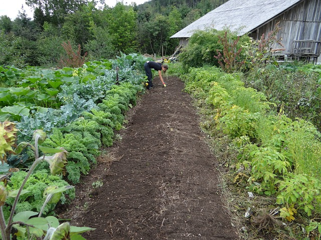
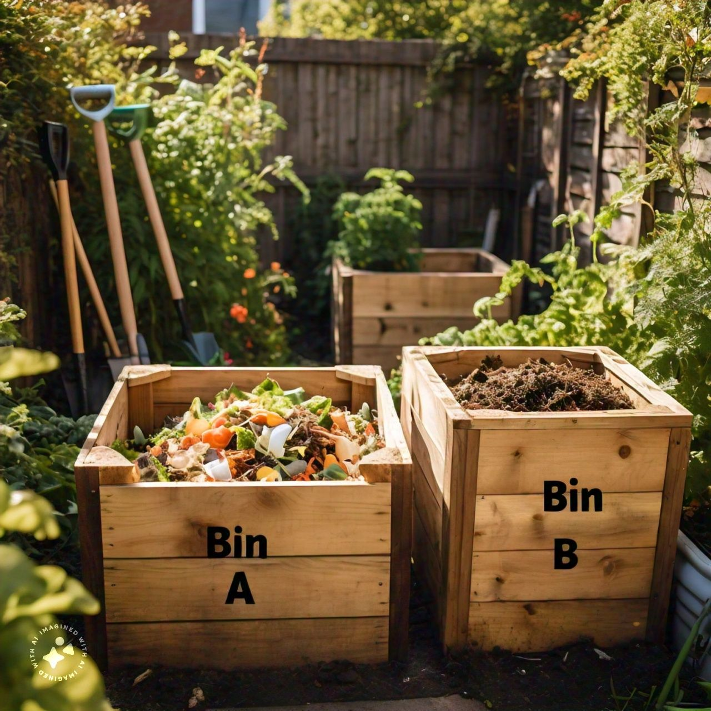

Garden Planning Services
Design your dream garden with our expert-guided sustainable practices.
Learn More
Consultation
Get personalized advice from our experts to make the most of your space.

Workshops
Participate in workshops to learn new sustainable gardening techniques.

Planning Tools
Use our innovative tools to plan and visualize your garden in real-time.
Frequently Asked Questions
Sustainable gardening involves practices that support
eco-friendly gardening, such as using less water, natural pest
control methods, and organic fertilizers. It focuses on
minimizing environmental impact and promoting biodiversity.
The frequency of watering depends on your climate, soil type,
and the plants you are growing. Generally, it's best to water
deeply and infrequently to encourage deep root growth and
resilience in plants.
Organic mulch helps to retain soil moisture, suppress weeds,
and as it decomposes, it provides nutrients to the soil. It
also improves the soil's structure and encourages beneficial
soil organisms.
The best time to plant vegetables depends on the specific type
of vegetable and your local climate. Generally, most
vegetables can be planted in early spring after the last frost
has passed, but some, like spinach and peas, can be planted
earlier.